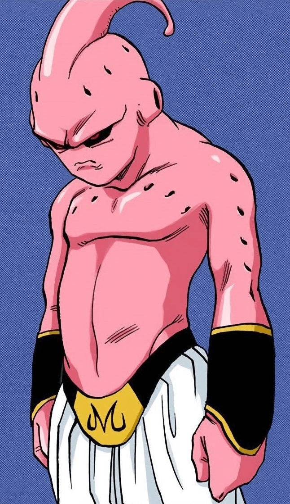

Kid Buu (魔ま人じんブウ（純じゅん粋すい） Majin Bū (Junsui), lit.
"Demon Person Boo (Pure)") is the original, pure form of Majin Buu.
Unlike his other forms, this form of Buu's thought process is seen to be irrational and spontaneous, even destroying his own body to destroy the Earth.
Although he appears smaller than any other form, he is more dangerous than any other forms of Buu due to his full relentless evil and unpredictability.
He is also completely free of restraint and has no trace of sanity and, because of this, is extremely volatile.
He retains his childish personality, becoming amused and laughing hysterically at his own destruction of entire worlds.
He is the main antagonist for the Kid Buu Saga, the final antagonist of the Majin Buu Saga, and the overall final antagonist of Dragon Ball Z.
Kid Buu's personality is very similar to that of a very young, spoiled, selfish child, in that he retains no form of compassion or remorse for any of his actions.
Furthermore, due to his selfish and capricious personality and mind-set, he is incapable of developing empathy and comprehending the nature of his actions.
It can also be said that Kid Buu is very similar to that of a low-functioning sociopath.
Kid Buu is also, like a child, very unpredictable in his behavior and actions, sometimes randomly falling asleep during battle or acting like a monkey by banging his chest with his fists.
Buu's only reason for existence was to cause absolute destruction.
He enjoys the destruction he is capable of; reveling in any form of devastation he can wreak upon the universe.
He appears to enjoy testing the limits of his own power as well, seeking out Vegeta and Goku just to see how far they could push him.
He is also utterly merciless, annihilating entire planets simply because Vegeta and Goku were not there.
On the rare occasion he ever showed any restraint of his power, it was either to make his "game" of destruction last longer instead of producing an instant kill or otherwise because he sensed even stronger targets to fight.
He is not a sadistic killer seeking to bring pain to his victims, as he seemingly does not care, or even know about pain, nor does he seek to conquer and rule over anything.
He merely seeks to have fun the only way he knows how; creating havoc and destruction in the whole universe, similar to the fat version of Buu before Mr. Satan told him to stop killing.
Though he is highly irrational and insane, Kid Buu does seem to have some reasoning abilities and intelligence, as he was shocked by Vegeta continuing to fight in spite of being battered around or when he quickly realized that Goku refused to hit him with the Super Spirit Bomb as long as Vegeta was in the way and took advantage of it by pinning the latter to the ground (although the latter bit was only in the anime).
Though caring little for Bibidi, Kid Buu at the very least seemed to tolerate his presence presumably due to Bibidi summoning him and encouraging the destruction he caused as well as leading him to powerful opponents to test his power against such as the Supreme Kais, thus showing that Kid Buu can tolerate weaker beings if they prove useful to him, even though he has no real loyalty to Bibidi.
In some video games, he is shown to get along with Janemba to the point they could be considered friends or at the very least allies as they both enjoy destruction and have similar personalities, even being able to fuse into their EX-Fusion Janembu.
However, in Super Dragon Ball Heroes Demon God Buu is shown to have no problem with absorbing Xeno Janemba, though it is possible that his personality is influenced by his absorption of Demon God Xeno Dabura.
Out of all the forms of Buu, Kid Buu appears to be the least capable of speech, which Vegeta even commented on by sarcastically calling Kid Buu a "gifted speaker".
After absorbing Demon God Xeno Dabura, he becomes capable of normal speech.
In the manga, his only phrase is "You've had it!" during the battle against Goku and Vegeta, his other words being mostly gibberish.
In the Funimation dub of the anime, Kid Buu's speech capacity is somewhat increased, as he says things such as "Buu squash you like bugs!", "Dum Dums!", "Me Buu, kill you!" and "Me Buu, not you!"
In Dragon Ball Legends, the evil within Innocent Buu falls under the influence of Zahha's Dark Ki after Innocent Buu is defeated by Super Saiyan 3 Shallot.
DRK Evil Buu absorbs Good Buu to become DRK Super Buu who absorbs Ultimate Gohan and Piccolo to increase his strength and intelligence.
Allying with the Mastermind's group, Super Buu becomes a thorn in Shallot's side for a good portion of the Tournament of Time.
However eventually DRK Super Buu undergoes purification which leads to Ultimate Gohan and Piccolo being freed, while DRK Kid Buu emerges to confront Shallot himself.
Interestingly, DRK Kid Buu is obsessed with defeating Shallot to the point he develops a habit of screaming Shallot's name not unlike Broly and Bio-Broly's habit of saying Kakarot!, though DRK Kid Buu mispronounces Shallot's name as either Sharrot, Sharot, or a variation on those pronunciations.
It is unclear if this is due to the effects of the Dark Ki, Kid Buu's memories of Innocent Buu's defeat, and/or a combination of the two.